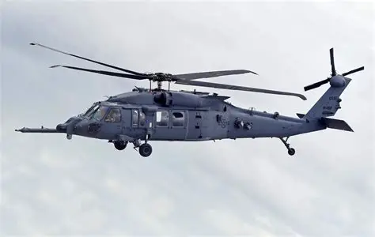

Las aeronaves militares cumplen funciones de vigilancia, transporte, apoyo táctico y operaciones estratégicas. Su velocidad y alcance las convierten en un elemento clave.
Aeronaves destacadas

Helicóptero táctico
Utilizado para transporte de tropas, rescate y apoyo aéreo cercano.

Avión de reconocimiento
Equipado con sensores avanzados para vigilancia y recopilación de información.